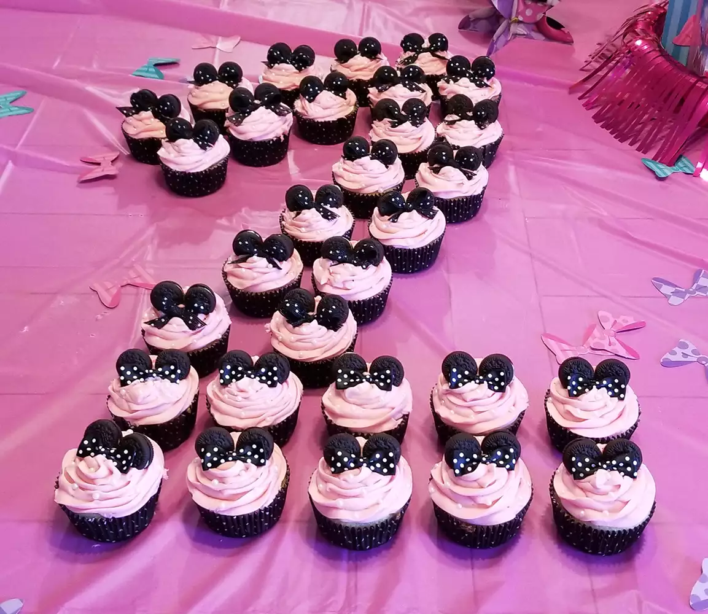

Home
Minnie Mouse Cupcakes Recipe

Description
Vanilla Oreo cupcakes with cream cheese frosting. These were a huge hit with the kids and tasted so good. They
were so much better than using a packaged cake mix. The cream cheese frosting went really well with the Oreos.
As the birthday cake lady, this is now my go-to cream cheese frosting, and I will never buy a box cake mix
again.
Ingredients:
- 36 chocolate sandwich cookies (such as Oreo®)
- 2 tablespoons all-purpose flour
- 3 ⅓ cups all-purpose flour
- 1 ½ teaspoons baking powder
- ¾ teaspoon salt
- ¾ cup butter, room temperature
- 2 ½ cups white sugar
- 1 ½ cups 1% milk
- 3 teaspoons vanilla extract
- 5 egg whites
Steps:
- Preheat the oven to 350 degrees F (175 degrees C). Line 36 cupcake cups with paper liners.
- Twist 36 cookies apart carefully. Break the side without cream into quarters and place in a bowl; toss in 2 tablespoons flour so that they don't stick together. Place the cookies with cream into the bottoms of each cupcake cup, cream-side-up.
- Whisk 3 1/3 cups flour, baking powder, and salt together in a separate bowl.
- Beat butter using an electric mixer with a flex edge attachment in another bowl until creamy and fluffy, about 5 minutes. Beat in sugar, milk, and vanilla extract using a wire attachment. Mix in flour mixture slowly until well blended using the flex edge attachment. Add egg whites and beat for 2 minutes. Fold in quartered cookies.
- Spoon batter into the prepared muffin cups, filling each 3/4 full.
- Bake in the preheated oven until a toothpick inserted into the center comes out clean, about 20 minutes. Remove from the oven and transfer to a wire rack to cool completely, about 30 minutes.
- Mix softened butter and vanilla extract together using an electric mixer in a mixing bowl until completely combined. Add powdered sugar, 1 cup at a time, mixing slowly until incorporated. Increase speed to medium-high and beat, scraping the sides of the bowl often, until frosting appears dry.
- Dip 2 toothpicks into food coloring twice and mix into frosting. Frost cupcakes as desired and decorate using mini chocolate cookies.